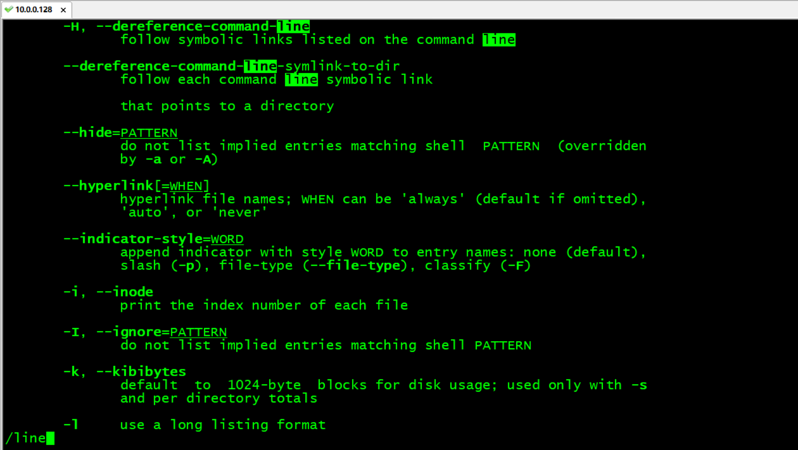
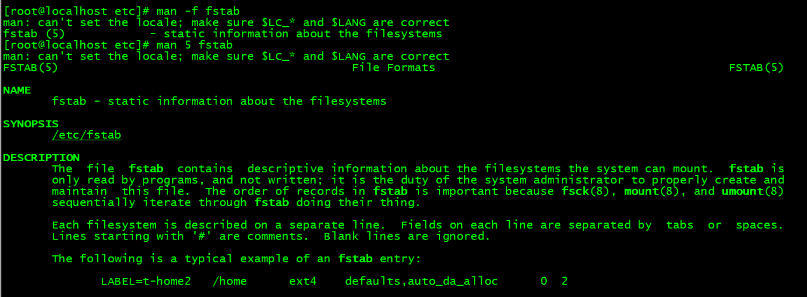
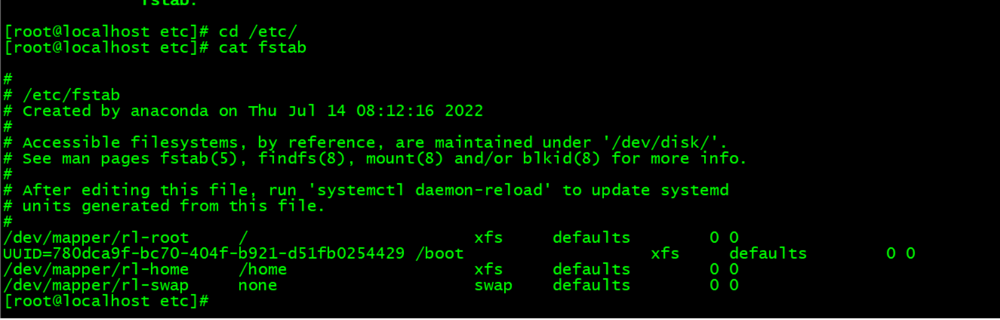
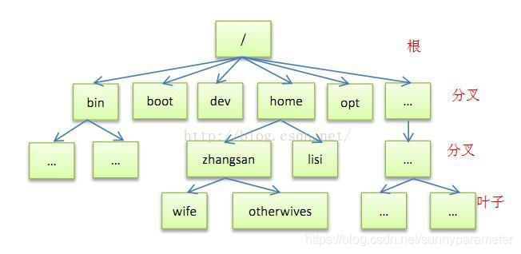
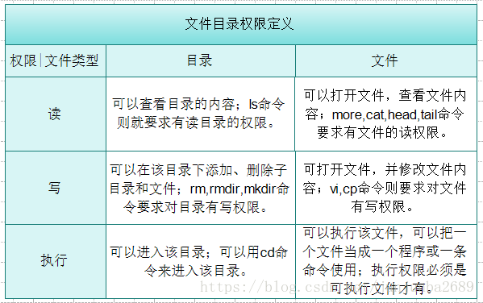

第一周作业
背景
图文并茂解释开源许可证 GPL、BSD、MIT、Mozilla、Apache和LGPL的区别？
BSD
BSD开源协议是一个给于使用者很大自由的协议。基本上使用者可以”为所欲为”，可以自由的使用，修改源代码，也可以将修改后的代码作为开源或者专有软件再发布。
但”为所欲为”的前提当你发布使用了BSD协议的代码，或者以BSD协议代码为基础做二次开发自己的产品时，需要满足三个条件：
◆如果再发布的产品中包含源代码，则在源代码中必须带有原来代码中的BSD协议。
◆如果再发布的只是二进制类库/软件，则需要在类库/软件的文档和版权声明中包含原来代码中的BSD协议。
◆不可以用开源代码的作者/机构名字和原来产品的名字做市场推广。
BSD 代码鼓励代码共享，但需要尊重代码作者的著作权。BSD由于允许使用者修改和重新发布代码，也允许使用或在BSD代码上开发商业软件发布和销售，因此是对 商业集成很友好的协议。而很多的公司企业在选用开源产品的时候都首选BSD协议，因为可以完全控制这些第三方的代码，在必要的时候可以修改或者二次开发。
AL2.0
Apache Licence是著名的非盈利开源组织Apache采用的协议。该协议和BSD类似，同样鼓励代码共享和尊重原作者的著作权，同样允许代码修改，再发布（作为开源或商业软件）。需要满足的条件也和BSD类似：
◆需要给代码的用户一份Apache Licence
◆如果你修改了代码，需要在被修改的文件中说明。
◆在延伸的代码中（修改和有源代码衍生的代码中）需要带有原来代码中的协议，商标，专利声明和其他原来作者规定需要包含的说明。
◆如果再发布的产品中包含一个Notice文件，则在Notice文件中需要带有Apache Licence。你可以在Notice中增加自己的许可，但不可以表现为对Apache Licence构成更改。
Apache Licence也是对商业应用友好的许可。使用者也可以在需要的时候修改代码来满足需要并作为开源或商业产品发布/销售。
GPL
我们很熟悉的Linux就是采用了GPL。GPL协议和BSD， Apache Licence等鼓励代码重用的许可很不一样。GPL的出发点是代码的开源/免费使用和引用/修改/衍生代码的开源/免费使用，但不允许修改后和衍生的代 码做为闭源的商业软件发布和销售。这也就是为什么我们能用免费的各种linux，包括商业公司的linux和linux上各种各样的由个人，组织，以及商 业软件公司开发的免费软件了。
GPL协议的主要内容是只要在一个软件中使用（”使用”指类库引用，修改后的代码或者衍生代码）GPL 协议的产品，则该软件产品必须也采用GPL协议，既必须也是开源和免费。这就是所谓的”传染性”。GPL协议的产品作为一个单独的产品使用没有任何问题， 还可以享受免费的优势。
由于GPL严格要求使用了GPL类库的软件产品必须使用GPL协议，对于使用GPL协议的开源代码，商业软件或者对代码有保密要求的部门就不适合集成/采用作为类库和二次开发的基础。
其它细节如再发布的时候需要伴随GPL协议等和BSD/Apache等类似。
LGPL
LGPL 是GPL的一个为主要为类库使用设计的开源协议。和GPL要求任何使用/修改/衍生之GPL类库的的软件必须采用GPL协议不同。LGPL 允许商业软件通过类库引用（link）方式使用LGPL类库而不需要开源商业软件的代码。这使得采用LGPL协议的开源代码可以被商业软件作为类库引用并 发布和销售。
但是如果修改LGPL协议的代码或者衍生，则所有修改的代码，涉及修改部分的额外代码和衍生的代码都必须采用LGPL协议。因 此LGPL协议的开源 代码很适合作为第三方类库被商业软件引用，但不适合希望以LGPL协议代码为基础，通过修改和衍生的方式做二次开发的商业软件采用。
GPL/LGPL都保障原作者的知识产权，避免有人利用开源代码复制并开发类似的产品。
MIT
MIT是和BSD一样宽范的许可协议，作者只想保留版权，而无任何其它的限制。也就是说，你必须在你的发行版里包含原许可协议的声明，无论你是以二进制发布的还是以源代码发布的。MIT协议又称麻省理工学院许可证，最初由麻省理工学院开发。被授权人权利：1、被授权人有权利使用、复制、修改、合并、出版发行、散布、再授权及贩售软件及软件的副本。2、被授权人可根据程式的需要修改授权条款为适当的内容。被授权人义务：在软件和软件的所有副本中都必须包含版权声明和许可声明。

LINUX获取帮助:man命令
man手册的格式
NAME 命令名称及功能简要说明
SYNOPSIS 用法说明，包括可用的选项
[] 可选内容
<> 必选内容
a|b 二选一
{} 分组
… 同一内容可出现多次
DESCRIPTION 命令功能的详细说明，可能包括每一个选项的意义
OPTIONS 说明每一项的意义
FILES 此命令相关的配置文件
EXAMPLES 使用示例
SEE ALSO 其他帮助参考
man手册的使用方法
翻屏
向后翻一屏：space(空格键) 向前翻一屏：b
向后翻一行：Enter(回车键) 向前翻一行：k
查找：
/KEYWORD 向后查找 n：下一个
?KEYWORD 向前查找 N：前一个
退出：q

man常用选项
man -a keyword 列出所有帮助
man -k keyword 搜索所有man手册
man -f keyword 相当于whatis
man -w keyword 打开man帮助文件的路径
例如：查看fstab文件格式

查看/etc/下的fstab文件

/etc/fstab文件包含了如下字段，通过空格或 Tab 分隔：1
<file system> <dir> <type> <options> <dump> <pass>- 要挂载的分区或存储设备. - 的挂载位置。 - 要挂载设备或是分区的文件系统类型，支持许多种不同的文件系统：ext2, ext3, ext4, reiserfs, xfs, jfs, smbfs, iso9660, vfat, ntfs, swap 及 auto。 设置成auto类型，mount 命令会猜测使用的文件系统类型，对 CDROM 和 DVD 等移动设备是非常有用的。 - 挂载时使用的参数，注意有些mount 参数是特定文件系统才有的。一些比较常用的参数有： auto - 在启动时或键入了 mount -a 命令时自动挂载。
noauto - 只在你的命令下被挂载。
exec - 允许执行此分区的二进制文件。
noexec - 不允许执行此文件系统上的二进制文件。
ro - 以只读模式挂载文件系统。
rw - 以读写模式挂载文件系统。
user - 允许任意用户挂载此文件系统，若无显示定义，隐含启用 noexec, nosuid, nodev 参数。
users - 允许所有 users 组中的用户挂载文件系统.
nouser - 只能被 root 挂载。
owner - 允许设备所有者挂载.
sync - I/O 同步进行。
async - I/O 异步进行。
dev - 解析文件系统上的块特殊设备。
nodev - 不解析文件系统上的块特殊设备。
suid - 允许 suid 操作和设定 sgid 位。这一参数通常用于一些特殊任务，使一般用户运行程序时临时提升权限。
nosuid - 禁止 suid 操作和设定 sgid 位。
noatime - 不更新文件系统上 inode 访问记录，可以提升性能(参见 atime 参数)。
nodiratime - 不更新文件系统上的目录 inode 访问记录，可以提升性能(参见 atime 参数)。
relatime - 实时更新 inode access 记录。只有在记录中的访问时间早于当前访问才会被更新。（与 noatime 相似，但不会打断如 mutt 或其它程序探测文件在上次访问后是否被修改的进程。），可以提升性能(参见 atime 参数)。
flush - vfat 的选项，更频繁的刷新数据，复制对话框或进度条在全部数据都写入后才消失。
defaults - 使用文件系统的默认挂载参数，例如 ext4 的默认参数为:rw, suid, dev, exec, auto, nouser, async.
dump 工具通过它决定何时作备份. dump 会检查其内容，并用数字来决定是否对这个文件系统进行备份。 允许的数字是 0 和 1 。0 表示忽略， 1 则进行备份。大部分的用户是没有安装 dump 的 ，对他们而言 应设为 0。 fsck 读取 的数值来决定需要检查的文件系统的检查顺序。允许的数字是0, 1, 和2。 根目录应当获得最高的优先权 1, 其它所有需要被检查的设备设置为 2. 0 表示设备不会被 fsck 所检查。
LINUX标准目录结构FHS
因为利用 Linux 来开发产品或 distribution 的团队实在太多了，如果每个人都用自己的想法来配置文件放置的目录，那么将可能造成很多管理上的困扰。所以，后来就有了 Filesystem Hierarchy Standard（FHS）标准的出炉了。
根据 FHS 的官方文件指出，其主要目的是希望让用户可以了解到数据通常放置于哪个目录下。也就是说，FHS 的重点在于规范每个特定的目录下应该要放置什么样子的数据而已。
FHS 依据文件系统使用的频繁与否与是否用户随意改动，而将目录定义成四种交互作用的形态：
可分享的：可以分享给其他系统挂载使用的目录，所以包括执行文件与用户的邮件等数据，是能够分享给网络上其他主机挂载用的目录。
不可分享的：自己机器上面运行的设备文件或者是与程序有关的 socket 文件等，由于仅与自身机器有关，所以不适合分享给其他主机。
不变的：有些数据是不会经常变动的，只会随着系统版本而变动。例如函数库、说明文件、系统管理员所管理的主机服务配置文件等。
可变动的：经常改变的数据，例如登录文件、用户文件等。
/：是Linux文件系统的根目录
/boot：系统启动所需要的文件目录
/bin：存放用户命令 例如：/bin/ls
/dev：设备文件目录
/etc：系统配置文件目录
/home：普通用户家目录
/root: 系统管理员root家目录
/run：进程的运行数据存放目录
/sbin：存放系统命令；管理员专用 例如：/sbin/shutdown
/tmp：临时文件目录；任何人都可访问，存放周期10天
/usr：常规目录；存放程序文件，库文件，共享文件，各种文档等
/usr/bin：存放后期安装的程序的运行脚本
/usr/local：第三方程序安装目录
/usr/sbin：类似/sbin；存放管理员使用的命令
/usr/tmp：被抛弃临时文件目录
/var：动态数据文件目录；日志文件log，数据库，缓存目录等
/var/tmp：临时文件目录；存放周期更长
文件管理
文件类型：-普通文件，d目录文件directory，l符号链接文件link，b块设备block，c字符设备character，p管道文件pipe，s套接字文件socket
显示当前目录的绝对路径：pwd
只取文件名不取路径名：basename 只取路径名不取文件名：dirname(网络路径也可以用)
回到前一级目录：cd - 回到家目录：cd
判断文件类型：file
回车是光标移到行首，换行是换到下一行，Windows里面两者是分开的，linux里面两者合在一起，所以两系统文本文件不兼容，可通过dos2unix来转换，unix2dos可以转化回去
查看文件内容：cat file
文件备份：cp
文件改名或文件搬移：mv
批量改名：rename
删除命令：rm(慎用)
创建目录：mkdir 只能删除空目录：rmdir 列出目录：tree -d
空间不够不一定是磁盘空间不够，也有可能是iNode数量不够
查看磁盘使用情况：df -h
删除大文件后，发现磁盘仍无剩余空间可能因为大文件已经打开了，或正在使用，空间不会马上释放
清空文件内容： cat /dev/null > xxx.xxx
硬链接文件(给文件取别名)：ln file1 file2(不支持对文件夹链接，不支持跨区链接) 软链接不受这个限制：ln -s file1 file2（此时file1的相对路径是相对file2的） 删除软硬链接时最后不要加/ 例子:rm -rf /data/boot
用户和组
Linux的多用户多任务
Linux 系统是一个多用户多任务的操作系统，所谓多用户多任务，是指支持多个用户在同一时间内登陆，不同用户可以执行不同的任务，并且互不影响。
例如：
小明所在的运维团队一共有四个人，分别有大毛，二毛，三毛，大毛负责网站，他的账户叫wangzhan， 二毛负责数据库，他的账户叫shujuku。
在同一时间，大毛和二毛都可以登录这台服务器，大毛可以查询网站的日志，二毛可以处理数据库的问题，他们之间互不影响。
由于我们设置了权限，大毛只能访问网站的日志，无法访问数据库;二毛可以处理数据库问题，但是不能访问网站的日志。这就实现了我们的多用户多任务的运行机制。
什么是用户
任何一个运维人员想要登录服务器，都必须先申请一个账号，然后以这个账号的身份进入系统，就像我们前面说的wangzhan这个账号。每个账号都拥有一个唯一的用户名和各自的密码，用户在登录时输入正确的用户名和密码后，就能够进入系统，默认会进入到这个用户自己的主目录
什么是用户组
用户组是具有相同特征用户的逻辑集合，简单来说，就是具有相同权限的用户的集合。
例如：人事部有20名员工，他们都需要访问一个文件夹，如果我们给这20个用户的账号分别设置权限，这样太麻烦了，所以我们会建立一个用户组叫HR，对这个组设置权限，将这20个用户加入这个组就可以了。
用户和用户组的关系
A 一个用户可以属于一个用户组，具有此用户组的权限。
HR组可以访问/hrfile的文件夹，当user01属于HR组，那么user01就可以访问/hrfile这个文件夹
B 一个用户可以属于多个用户组，此时具有多个组的共同权限
HR可以访问/hrfile的文件夹，运维可以访问/yunweifile的文件夹，当user01同时属于HR组和运维组，那么user01可以访问 /hrfile和/yunweifile
C 多个用户可以属于一个用户组，多个用户都具有此用户组的权限。
主组：指用户创建时默认所属的组，每个用户的主组只能有一个。创建用户时会同时创建一个和用户名相同的组。
例如：添加用户xiaoming，在建立用户 xiaoming 的同时，就会建立 xiaoming 组作为 xiaoming 用户的初始组。
附加组：每个用户只能有一个主组，除主组外，用户再加入其他的用户组，这些用户组就是这个用户的附加组。每个用户的附加组可以有多个，而且用户可以有这些附加组的权限。
通常用户和用户组的管理，包含以下工作：
☆ 用户组的管理
☆ 用户账号的添加、删除、修改以及用户密码的管理
注意三个文件：
/etc/passwd 用户配置文件，存储用户的基本信息
/etc/group 存储用户组的信息
/etc/shadow 存储用户的密码信息
相关命令：groupadd groupmod groupdel useradd usermod userdel
文件目录权限
Linux系统中的每个文件和目录都有访问许可权限，用他来确定谁能通过何种方式对文件和目录进行访问和操作。
权限的分类:
r 读权限：可以打开文件、目录读取查看；
w 写权限：对文件、目录可以编写更改；
x 执行权限：对文件可执行(可执行文件)、对目录可查找该目录下的内容；
- 没有权限如 ls -l
- -rwxr-xr-x

权限所属对象:
1.拥有者
生成文件或目录时登陆的当前人，权限最高，用u表示。
2.同组人
系统管理员分配的同组的一个或几个人，用g表示。
3.其他人
除拥有着，同组人以外的人，用o表示。
4.所有人
包括拥有着、同组人及其他人，用a表示。
相关命令：chmod chown
chmod（英文全拼：change mode）命令是控制用户对文件的权限的命令
只有文件所有者和超级用户可以修改文件或目录的权限。可以使用绝对模式（八进制数字模式），符号模式指定文件的权限。
chown（英文全拼：change owner）命令用于设置文件所有者和文件关联组的命令。
利用 chown 将指定文件的拥有者改为指定的用户或组，用户可以是用户名或者用户 ID，组可以是组名或者组 ID，文件是以空格分开的要改变权限的文件列表，支持通配符。 。
chown 需要超级用户 root 的权限才能执行此命令。
本博客所有文章除特别声明外，均采用 CC BY-SA 4.0 协议 ，转载请注明出处！